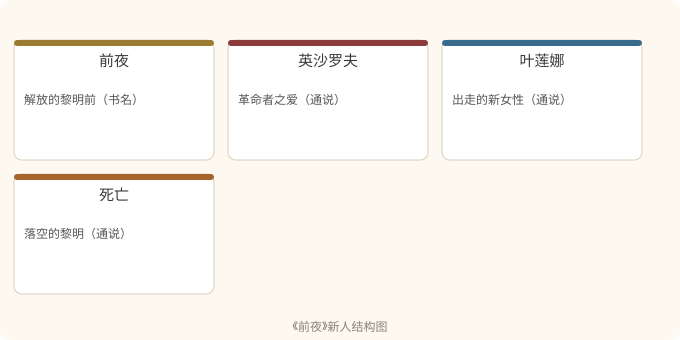

前夜
一、基本信息
| 作者 | 屠格涅夫 |
|---|---|
| 成书/出版 | 1860年（Britannica（B141）：1860《前夜》） Ivan Turgenev — Encyclopaedia Britannica（百科全书） |
| 国别/地区 | 俄国 |
| 时代 | 近代 · 19世纪50年代末 |
| 体裁 | 长篇小说 |
| 语言 | 俄语 |

《前夜》新人结构图（主题·结构图）
二、创作背景
B141：'1860《前夜》1862《父与子》（虚无主义者巴扎罗夫——激进与保守两头挨骂促其自我流放西欧）'。
Britannica（B141）：屠格涅夫——终生恋波琳娜·维亚尔多（作者页语境）。
题材（通说待核）：叶莲娜与保加利亚革命者英沙罗夫——解放前夜的爱情与牺牲。
三、内容脉络
（通说待核）叶莲娜的选择：追随革命者的私奔。
（通说待核）英沙罗夫之死与'前夜'的落空。
四、主要人物表
| 人物 | 身份 | 说明 |
|---|---|---|
| 叶莲娜 | 贵族少女 | （通说待核） |
| 英沙罗夫 | 保加利亚革命者 | （通说待核） |
五、主题与艺术特点
- 解放前夜的社会期待（书名语境——通说待核）。
- '新人'的登场（通说待核—— precedes 巴扎罗夫）。
- 跨国革命的牺牲（通说待核）。
六、影响与评论
- Britannica：1860《前夜》（B141）。
Ivan Turgenev — Encyclopaedia Britannica（百科全书） - Britannica：《父与子》巴扎罗夫的'新人'先声（B141 交叉）。
Ivan Turgenev — Encyclopaedia Britannica（百科全书）
七、阅读建议
难点
- 1860年俄国社会语境。
- 保加利亚民族解放史（通说待核）。
- 《前夜》中译本（人民文学等——通说待核）。
- 俄文原版（公有领域）。
屠格涅夫'新人'序曲；后接《父与子》。
八、待核实
- 叶莲娜/英沙罗夫人名核对（通说）。
- 1860年发表细节待核。
- 杜勃罗留波夫《真正的白天何时到来》评论文待核。